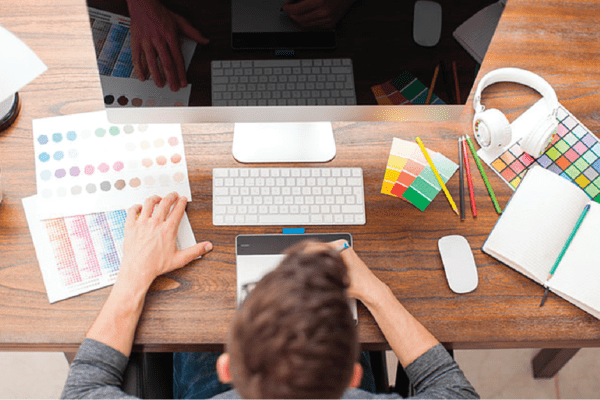
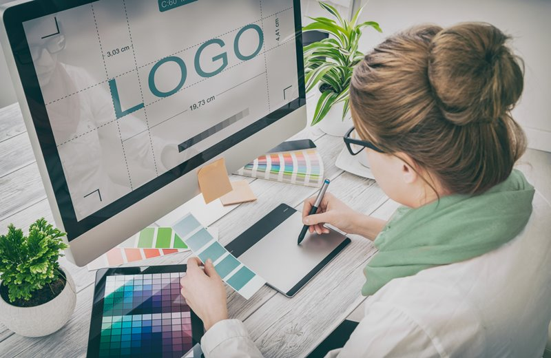
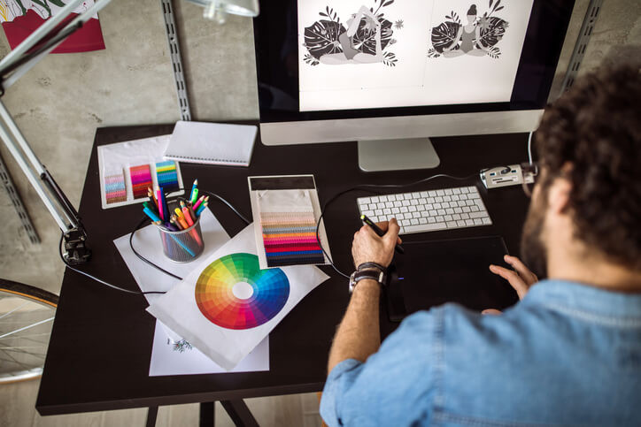
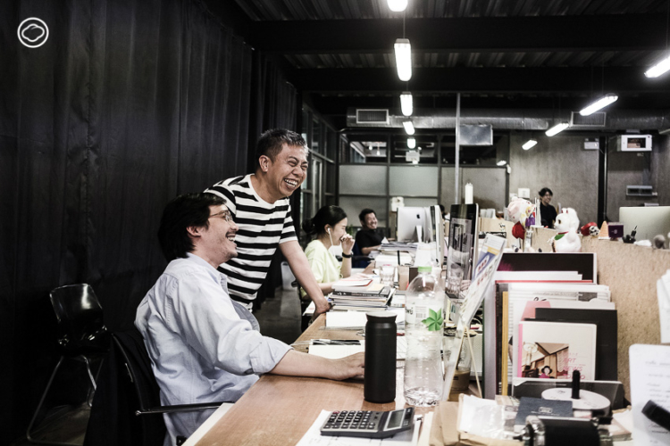

5. กราฟฟิกดีไซนเนอร์ (Graphic Designer)

นักออกแบบกราฟิกหรือนักออกแบบเรขศิลป์ คือ ผู้ออกแบบภาพและตัวอักษรเพื่อใช้ในการสื่อสาร โดยเราสามารถสังเกตได้ว่างานของกราฟิกดีไซน์เนอร์ปรากฎอยู่หลายที่ ทั้งป้ายจราจร แผ่นโฆษณา ปกหนังสือ รูปวาด ลายเสื้อ โลโก้สินค้า ตัวอักษร และอีกมากมายรอบตัวล้วนเป็นกราฟิก เพื่อสื่อสารให้ผู้คนเข้าใจความหมายว่าต้องการบอก เตือน ห้าม หรือชักชวน สิ่งเหล่านี้คือหน้าที่ของพวกเขา
สมาคมนักออกแบบเรขศิลป์ได้สรุปความหมายของคำว่า "การออกแบบเรขศิลป์ (Graphic Design)" ไว้ในระเบียบวาระของสมาคมฯ ปี พ.ศ. 2553 ไว้ว่า “กระบวนการสร้างสรรค์ หรือการออกแบบเพื่อใช้ในการสื่อสาร อันเกิดจากการผสมผสานของ แนวความคิด ศิลปะ เทคโนโลยี หรือข้อมูล ผ่านทางสื่อในรูปแบบต่างๆ โดยมีองค์ประกอบที่ใช้ในการทำงานอันประกอบด้วยภาพ และหรือ ตัวอักษร เป็นสำคัญ ผู้ออกแบบอาศัยทักษะ ทฤษฎี หลักการ หรือ กระบวนการคิด มาช่วยในการแก้ปัญหา เพื่อเพิ่มประสิทธิภาพในการสื่อสาร การเข้าถึงข้อมูล หรือในการรับรู้ ”

ลักษณะการทำงาน
เบื้องหลังของความสวยงาม นักออกแบบไม่ได้แค่วาดเส้นเท่ ๆ ออกมาอย่างง่ายดาย หากต้องผ่านกระบวนการคิดอย่างเป็นขั้นตอน อย่างมีหลักการ เพื่อตอบสนองวัตถุประสงค์ของชิ้นงานนั้น ๆ ว่ามีขึ้นเพื่ออะไร แล้วจะใช้วิธีอะไรเพื่อตอบสนองเป้าหมายหลัก ดังนั้น ทุกไอเดียบรรเจิดล้วนต้องมีที่มา และกว่าจะคลอดออกมาได้ต้องผ่านความยาก ความลำบากไม่ต่างกับทุกอาชีพ
เนื่องจากกราฟิกนั้นมีอยู่ในทุกวงการ ทั้ง Art Director สายโฆษณา Designer แนวสิ่งพิมพ์ บรรจุภัณฑ์ Exhibition นิทรรศการ พิพิธภัณฑ์ event ต่าง ๆ Retoucher Illustrator นักวาดภาพ ออกแบบ เขียน storyboard หรือจะเป็น Web Designer ที่จะได้ยินบ่อย ๆ กับคำว่า UX/UI หรือ Infographic และอีกมากมาย แต่ละอย่างที่กล่าวมาสามารถเจาะจงแยกเป็นสายอาชีพแต่ละสายต่างหากออกไปได้ โดยในที่นี้ จะขอกล่าวถึงกราฟิกแนวโฆษณา สิ่งพิมพ์ บรรจุภัณฑ์

ขั้นตอนการทำงาน
รับรายละเอียดงานจากลูกค้า งานอะไร กลุ่มผู้ใช้งานเป็นใคร สื่อที่จะใช้ ใช้ที่ไหน บางรายละเอียด ลูกค้าอาจจะไม่ได้บอก เราต้องเป็นคนที่คิดล่วงหน้าและสอบถาม ให้ได้ข้อมูลที่ต้องการให้ครบถ้วนที่สุด นำข้อมูลมาวิเคราะห์ เพื่อสร้างแนวคิดที่จะตอบสนองโจทย์ที่รับมา ศึกษางานตัวอย่างเพื่อนำมาประยุกต์ใช้ ในแต่ละงานตัวอย่างจะมีบางส่วนประกอบที่เข้ากับแนวคิดที่วิเคราะห์ไว้ โดยที่ตัวอย่างงานอาจจะเป็นอะไรก็ได้ ไม่ว่าจะเป็นของเล่น อาหาร หนัง เพลง ผู้คน ทุกอย่างคือชิ้นส่วนที่จะมาถอดความหมาย และถูกตีความเพื่อสร้างสรรค์งานของเราเอง ซึ่งไม่ใช่การลอกเลียนแบบ Sketch แบบร่าง แบบร่างมีความจำเป็นอย่างมากต่อทุกงาน บางงานมีสามแบบร่าง บางงานมีเป็นสิบ เพื่อนำมาวอเคราะห์ให้ได้คำตอบที่ดีที่สุดนำเสนอลูกค้า นำแบบมาพัฒนา เพิ่มเติมรายละเอียด ขยับ ปรับจนลงตัว และลงมือสร้างชิ้นงานที่เสร็จสมบูรณ์ พร้อมที่จะทำหน้าที่ของตัวมันเอง หลังงานเสร็จแล้ว หน้าที่ของนักออกแบบยังไม่จบ เพราะต้องติดตามผลงาน นำ feedback มาพัฒนางานต่อไป
สถานที่ทำงาน ออฟฟิศ คือแหล่งทำงานหลัก เพราะต้องมีการระดมสมองกับทีม ช่วยกันทำผลงาน จะมีออกไปข้างนอกเวลานัดคุยกับลูกค้า นำเสนอแบบ สถานที่ใดก็ได้ที่สะดวกในการทำงาน โดยเฉพาะปัจจุบันมีนักออกแบบกราฟิกอิสระมากมาย ซึ่งการได้ออกไปข้างนอกนั้น การได้เห็นผู้คนมากมาย ได้เจอสิ่งต่าง ๆ อาจเป็นวัตถุดิบชั้นดี ช่วยให้มีไอเดียในการทำงานมากขึ้น
ผู้ที่ต้องทำงานด้วย ลูกค้า ลูกค้าจะเป็นผู้กำหนดเป้าหมายของสารที่จะสื่อออกไปของแต่ละงาน นักออกแบบต้องเข้าใจและมองเห็นปลายทางเดียวกันกับลูกค้า เพื่อสร้างงานที่ตอบโจทย์

ทีมงาน กลุ่มคนที่ช่วยกันคิด ช่วยกันหาทางแก้ไขและลงมือทำ
Supplier – ในบางรายละเอียดของงานที่ไม่สามารถทำได้ด้วยตัวเอง จำเป็นจะต้องมีพันธมิตรในด้านต่าง ๆ ที่จะช่วยเติมเต็มสิ่งที่ทีมงานยังขาด ยกตัวอย่างเช่น ต้องการทำโฆษณาอาหาร ก็ต้องหาสตูดิโอถ่ายทำที่มีห้องครัว ต้องหาพ่อครัว หาทีมงานถ่ายทำ ทีมจัดไฟ พันธมิตรจะมีมากน้อยแตกต่างกันไปขึ้นอยู่กับแต่ละงาน ผู้ประสานงาน ในหลาย ๆ งาน ตัวลูกค้าอาจไม่สามารถติดต่อสื่อสารได้โดยตรงด้วยตัวเองตลอดเวลา จึงต้องมีคนทำหน้าที่ประสานงานกับนักออกแบบเพื่อให้การทำงานเป็นไปอย่างราบรื่น